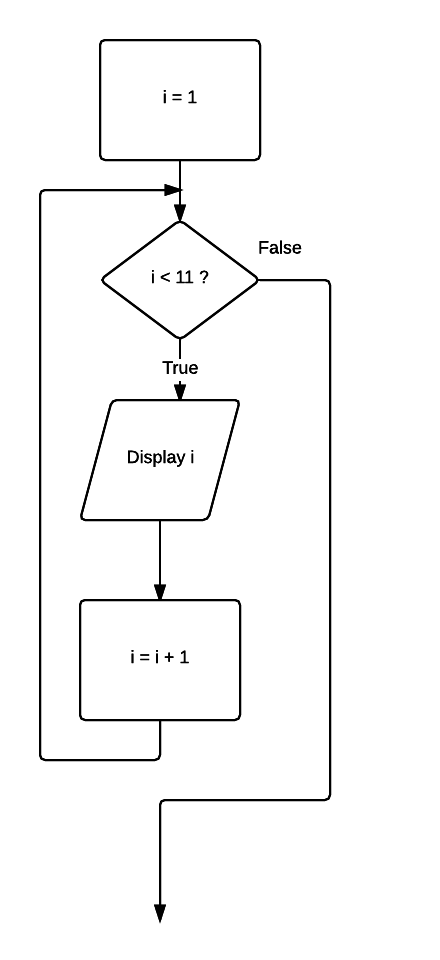

05 Pre-test loop
Repetition allows for a portion of an algorithm or computer program to be executed any number of times dependent on some condition being met. An occurrence of repetition is usually known as a loop.
An essential feature of repetition is that each loop has a termination condition to stop the repetition, or the obvious outcome is that the loop never completes execution. This is known as an infinite loop and is obviously undesirable. The termination condition can be checked or tested at the beginning or end of the loop, and is known as a pre-test or post-test respectively.
A pre-tested loop is so named because the condition has to be met at the very beginning of the loop or the body of the loop is not executed. This construct is often called a guarded loop. The body of the loop is executed repeatedly while the termination condition is true.
Problem
Write a set of instructions that displays all numbers between 1 to 10.
Pseudocode
i = 1 WHILE i < 11 Display i i = i + 1 ENDWHILE
Javascript
var i = 1;
while (i < 11) {
console.log(i);
i = i + 1;
}
Flowchart
Open this document in Chrome and open the developer tools Windows: F12 or Ctrl-shift+I, Mac: Cmd + Opt + I.
Click run button.
Observe the console output.
Your task
Modify program.js: Display the even numbers from 2 to 20.